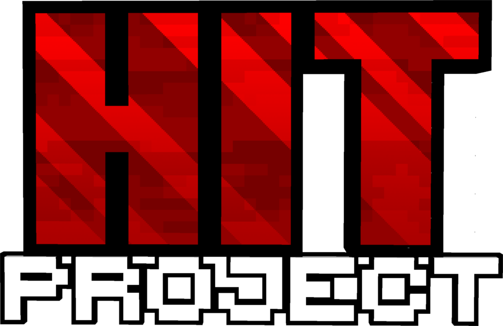

Hit Project — это Minecraft SMP RP сервер для ютуберов и Twitch-стримеров. Здесь можно строить истории, снимать контент, делать коллабы и развивать свой персонаж в живом ролевом мире.
Красный, белый и чёрный стиль подчёркивает характер сервера: агрессивный визуал, чистая подача и сильный акцент на контенте.
Сейчас на сайте размещены временные кнопки заявок. Позже их можно подключить к Google Forms, Discord-боту или отдельной странице с анкетой.
Для авторов на YouTube и стримеров Twitch, которым интересны RP, SMP и совместный контент.
Игровой мир с ролеплеем, сюжетами, взаимодействием между участниками и ивентами.
Лаконичный тёмный дизайн с красными акцентами и фирменным логотипом.